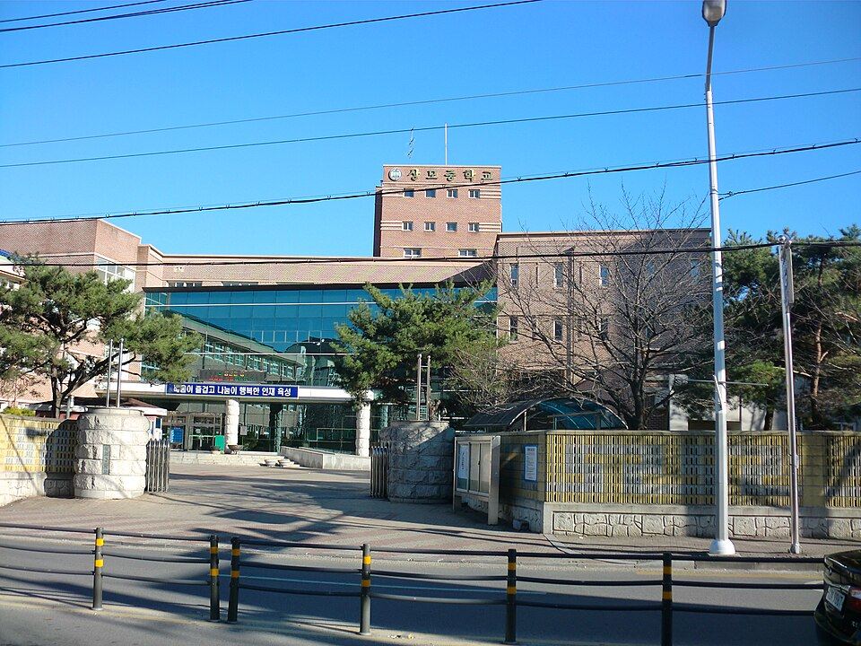

구미는 낙동강을 사이에 두고 생활권이 둘로 나뉘는 도시입니다. 강 서쪽으로 형곡동·송정동·도량동·봉곡동이, 강 동쪽으로 인동·진평동·옥계동·산동읍이 이어집니다. 금오고(금오고등학교)·구미여고(구미여자고등학교)·현일고(현일고등학교)·구미고(구미고등학교) 같은 고등학교와 형곡중(형곡중학교)·봉곡중(봉곡중학교)·옥계중(옥계중학교)·상모중(상모중학교)이 강 양쪽에 흩어져 있어, 같은 구미라도 집에서 학원까지 오가는 길이 제각각입니다. 다리를 건너 학원을 오가는 데 저녁 시간이 빠지는 게 아까울 때 집으로 찾아오는 1:1 고등 수학과외나 초등 국어과외를 찾게 됩니다.
오늘은 구미로 직접 찾아가는 선생님들 가운데 맡는 과목이 서로 다른 두 분을 소개합니다. 한 분은 초등부터 고3까지 수학을 보는 선생님, 한 분은 초등 1~5학년의 국어와 수학을 함께 보는 선생님입니다.
구미에서 고등 수학과외를 찾는 집의 고민은 대개 두 가지가 겹쳐 있습니다. 당장 다가오는 내신 시험 범위를 챙겨야 하는데, 그 범위를 풀려면 앞 단원의 기초가 비어 있는 경우입니다. 이 선생님을 소개하는 이유는 내신 대비와 기초 학습을 한 수업 안에서 같이 진행하기 때문입니다. 시험 범위만 쫓거나 기초만 붙잡고 있지 않고, 학생에게 지금 필요한 쪽의 비중을 맞춰 갑니다.
학원 경력이 5년이고, 초1부터 고3까지 한 사람이 이어서 볼 수 있어 학년이 올라갈 때마다 선생님을 바꾸지 않아도 됩니다. 봉곡동·도량동 쪽은 방문으로, 그 밖의 지역이나 일정이 빠듯한 주에는 화상으로 진행할 수 있습니다. 수학 외에 JavaScript 코딩 수업도 하는데, 코딩은 평일 낮(13:00~16:00)과 일요일 저녁에 가능합니다.
김ㅇ건 선생님 상세 프로필 →구미에서 초등 국어과외를 찾는 시점은 대개 초등 3~4학년입니다. 교과서 글이 길어지고 문제에 "까닭을 쓰시오" 같은 서술형이 늘면서, 책은 읽는데 무엇을 묻는지 모르는 일이 생깁니다. 이 선생님을 소개하는 이유는 유아·초등 학습 교사로 25년을 보낸, 이 나이대 아이들을 오래 가르쳐 온 선생님이기 때문입니다. 교육학을 전공했고 중등교원·보육교사 자격증을 갖고 있습니다.
국어와 수학을 초1부터 초5까지 함께 맡을 수 있어, 두 과목을 한 사람에게 맡기고 싶은 집에 맞습니다. 강 동쪽의 옥계동·산동읍과 강 서쪽의 형곡동·송정동을 모두 방문 지역으로 두고 있어 구미 안에서 고를 수 있는 폭이 넓은 편입니다. 수업 뒤 학부모 상담을 함께 챙기는 선생님이라, 아이가 어디서 막히는지 집에서도 알고 싶을 때 좋습니다. 방문 수업만 하는 선생님이라 구미 안에서 진행합니다.
이ㅇ경 선생님 상세 프로필 →학교마다 진도와 시험 범위가 달라서, 학교별로 준비법을 따로 정리해 두었습니다.
관련 검색어: 구미수학과외 · 구미국어과외 · 금오고내신 · 구미여고내신 · 현일고수학과외
👉 구미 수학과외 선생님 · 구미 국어과외 선생님 · 구미 관리 학교 전체 보기